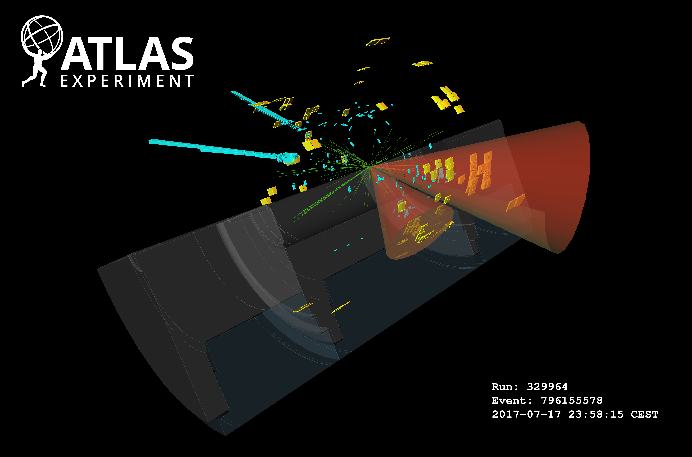

9 Search for a heavy scalar particle \(X\) decaying to a scalar \(S\) and a Higgs boson, with final state \(b\bar{b}\gamma\gamma\) in the ATLAS detector
As part of my PhD, I made some various contributions to a search for a physics process \(X\rightarrow SH \rightarrow b\bar{b}\gamma\gamma\), where \(X\) and \(S\) are scalar particles beyond the Standard Model. My contributions include:
- building a faster framework for data processing
- assisting with the development of a pipeline to classify signal versus background using a neural network parametrized in the truth-level masses \(m_X\) and \(m_S\)
- using the method I developed with normalizing flows to interpolate a 2-D signal shape across different signal mass points
- various small contributions to the statistical analysis setup
- the proposal of a new observable based on normalizing flows
The analysis of this data is still in the preliminary stages at the time of writing, so take all these studies with a grain of salt.
Also, a quick note on shorthand for this section – you’ll see me write notation like \(H(bb)\) – this means that we’re looking at the case where a Higgs boson is decaying to two \(b\)-quarks as its final state.
9.1 Overview and motivation
The new particle discovered in 2012 (ATLAS-Collaboration 2012) is widely regarded to represent the Higgs boson as predicted by the Standard Model, which is predicted to have a rest mass of \(125 \, \text{GeV}\). While this is confirmatory of the existence of some flavor of the Standard Model, we know this isn’t the end of the story. Many physics theories beyond the Standard Model predict some kind of Higgs sector, where additional scalar bosons could exist and interact with the Higgs in some way, but have yet to be discovered. To this effect, it is useful to probe data taken from proton-proton collisions to see if particles produce states that correspond to e.g. resonances that look like these new scalars.
In particular, this work looks at the process \(X\rightarrow SH \rightarrow b\bar{b}\gamma\gamma\), where \(X\) is a heavy scalar with a mass large enough to produce a Higgs with Standard Model mass (i.e. \(m_H = 125 \text{ GeV}\)) and a scalar \(S\) with mass \(m_S\) such that \(m_X > m_S + m_H\), which makes the decay \(X\rightarrow SH\) satisfy energy conservation. I found an example for something that looks like a candidate event for this process as-seen by the ATLAS detector, shown in Figure 9.1.


This particular process is predicted by a number of different theories, including but not limited to:
- Next-to-Minimal two-Higgs Doublet Model (He et al. 2009)
- Next-to-Minimal Supersymmetric Standard Model (Ellwanger, Hugonie, and Teixeira 2010)
- Complex two-Higgs Doublet Model (Ilya F. Ginzburg, Maria Krawczyk and Per Osland 2002)
- Two-Real-Scalar Standard Model extension (Tania Robens and Wittbrodt 2020)
It’s worth noting the problems that these theories solve (i.e. why they are interesting at all), which span combatting matter-antimatter asymmetry mechanisms in the early universe (Jiang et al. (2016)) to producing possible dark matter candidates (Gonderinger, Lim, and Ramsey-Musolf (2012)) amongst other things. Recall our discussion in Section 1.5 that went over some extra issues of this nature, e.g. the hierarchy problem.
The next thing to address is why it’s worth it to look at \(b\bar{b}\gamma\gamma\) as a final state. The first reason is that if we assign the di-photon state as originating from a Higgs boson, we would have a a very clear way to select events we want to analyze, as experiments at the Large Hadron Collider have the ability to precisely determine the energies of photons in their electromagnetic calorimeters. Events originating from decays of interest would then leave a fairly sharp peak at 125 GeV in the invariant mass spectrum of the two-photon system, which we can turn into a requirement for including those events in our analysis. This would leave the \(b\) quarks (which would be seen in the detector as jets due to hadronization) as originating from the \(S\) particle, which is the dominant decay mode of the \(S\) when one assumes that it has properties similar to the Standard Model Higgs. Of course, despite all this, choosing any one particular final state is a needle-in-a-high-dimensional-haystack approach, with there being many other choices of theories and states to consider. In that sense, there is no particular reason other than to look where has not been checked yet.
What exactly are we looking for then? As alluded to in Section 3.3, searches for new particles involve calculating \(p\)-values (or \(\text{CL}_s\) values), either trying to reject a background-only hypothesis for discovery, or to set an upper limit on the signal strength. We concentrate on the latter, with the steps ahead demonstrating the task of the analyzer to optimize the workflow for this purpose.
9.2 Simulated data
Data for the signal process of \(X\rightarrow SH \rightarrow b\bar{b}\gamma\gamma\), where the \(b\) quarks are associated to the \(S\) and the photons are associated to the Higgs boson, was generated at a variety of possible combinations of \(m_X\) and \(m_S\). We can see the points chosen in Figure 9.2, where the upper-left quadrant is kinematically forbidden (there, \(m_X < m_S + m_H\)). Sensitivity to this process is forecast to be reasonable up to around \(m_X \approx\) 900 GeV and \(m_S \approx\) 300 GeV (by (Sebastian Baum, Nausheen R. Shah 2010)), which we conservatively extended to 1000 GeV and 500 GeV respectively. We began with just the grid on the bottom-left, and later extended this sparsely to the high mass region.
The different specific event generator tools used for all of the simulation were PYTHIA (Sjöstrand et al. 2015), SHERPA (Bothmann et al. 2019), EvtGen (Ryd et al. 2005), and NNPDF (Ball et al. 2015). We can segment their use for the two cases for signal and background.
For signal processes, samples were generated for each mass point in Figure 9.2 at leading order (i.e. only the simplest processes for that interaction) with Pythia 8 doing the underlying quantum field theory calculations. EvtGen was used to simulate the fragmentation of the \(b\)-quark jets into hadrons. NNPDF 2.3 controlled the set of parton distribution functions used, which dictate the interior structure of the protons that are colliding, and therefore play an important role in the calculations for different scattering probabilities when the constituents of those protons collide. Additionally, there are effects It’s worth mentioning that the new scalar particles \(X\) and \(S\) were generated using what’s called the narrow-width approximation, which simplifies calculations greatly by assuming the particles are very short-lived before decaying, and results in more narrow invariant mass spectra as a result.
In the case of background – that is, every Standard Model process that could possibly generate a final state of two \(b\) quarks and two photons – things get a lot more complicated, since there are many more processes we need to consider. To add more granularity to this, the main contributions that were simulated include:
- Interactions involving the strong force (known as QCD, or quantum chromodynamics) that result in two photons and two jets (shorthand \(\gamma\gamma jj\))
- Associated production of a Higgs boson and two top quarks (\(tt(bb)H(\gamma \gamma)\))
- Fusion of two gluons to a Higgs, where a gluon in the process fragments to a \(bb\) pair of jets (\(ggH\))
- Associated production of a \(Z\) boson and a Higgs, where the \(Z\) decays hadronically to quarks (\(Z(qq)H(\gamma \gamma)\))
- Different types of di-Higgs events, where two Higgs bosons are produced
Despite this separation, when event weights are produced, the \(\gamma\gamma jj\) background completely dominates all the others (> 99% of the contribution to the total event weights). The different simulation contributions are summarized in Table 9.1 for those that want more detail, but it’s worth noting that the methods I worked on treat the background sample as one unit, equal to the concatenation of all events from these processes, which is an intentional simplification.
| Process Type | Physics simulators | Parton distributions (Probabilities) | Parton distributions (Showering) | Production Mode |
|---|---|---|---|---|
| Single Higgs | NNLOPS + PYTHIA8 | PDFLHC | AZNLOCTEQ6 | \(ggH\) |
| Single Higgs | POWHEG + PYTHIA8 | PDFLHC | AZNLOCTEQ6 | Vector-boson fusion |
| Single Higgs | POWHEG + PYTHIA8 | PDFLHC | AZNLOCTEQ6 | \(W^{+}H\) |
| Single Higgs | POWHEG + PYTHIA8 | PDFLHC | AZNLOCTEQ6 | \(W^{-}H\) |
| Single Higgs | POWHEG + PYTHIA8 | PDFLHC | AZNLOCTEQ6 | \(qq \rightarrow ZH\) |
| Single Higgs | POWHEG + PYTHIA8 | PDFLHC | AZNLOCTEQ6 | \(gg \rightarrow ZH\) |
| Single Higgs | POWHEG + PYTHIA8 | PDFLHC | A14NNPDF23 | \(ttH\) |
| Single Higgs | POWHEG + PYTHIA8 | PDFLHC | A14NNPDF23 | \(bbH\) |
| Single Higgs | MGMCatNLO + PYTHIA8 | NNPDF | A14NNPDF23 | \(tHbj\) |
| Single Higgs | MGMCatNLO + PYTHIA8 | NNPDF | A14NNPDF23 | \(tHW\) |
| di-Higgs | POWHEG + PYTHIA8 | PDFLHC | A14NNPDF23 | \(ggHH\) |
| di-Higgs | MGMCatNLO + PYTHIA8 | NNPDF | A14NNPDF23 | VBF \(HH\) without \(VHH\) |
| QCD | SHERPA2 | SHERPA2 | SHERPA2 | \(\gamma\gamma\)+jets (0-4), \(m_{\gamma\gamma} \in 90-175\, \text{GeV}\) |
| QCD | MGMCatNLO + PYTHIA8 | MGMCatNLO | MGMCatNLO | \(t\bar{t}\gamma\gamma\) |
9.3 Preprocessing and selection
Before analyzing the data we simulated above, which gives us access to kinematic quantities of the objects in the detector, there is typically a pre-filtering stage – called a preselection – where we slim down this dataset to only things that we’re interested in based on a set of criteria. To talk about that, we’ll have to first speak a little about jets, which need a bit more work due to their very messy signature from all the showering into hadrons.
9.3.1 Tagging \(b\)-jets
Just as a reminder, quarks are never seen alone – they’re always in some composite state with other quarks, which we call hadrons. When a quark is produced in a decay, it will really be bound somehow to a different quark, which we can picture as a rope. When the rope breaks from them going too far away, we can think of each end of the rope turning into a new quark to keep the state stable. We call this hadronization, and it’s this process happening over and over again that forms a spray of particles that has a conic shape, which we call a jet.
Now, how might we distinguish a jet that comes from two different quark types? There aren’t any particularly clear differences from first principles that I know of, but since quarks differ in concrete ways (mass being the main one), we’d expect the jets to have subtly differing dynamics. That’s why we need more complicated algorithmic systems to tell these jets apart based on their properties, which are colloquially called taggers since they tag a jet with a label of the quark type. Taggers are usually something like a neural network, which can take in many different inputs about the structure of the jet, and give us a single number that represents the likelihood of that jet being of a certain type. Since the Higgs boson most commonly decays to two \(b\)-jets, we have very specialized \(b\)-taggers in particle physics. We’re very interested in making use of these \(b\)-taggers to help us identify which jets in our events came from \(b\)-quarks, which could sign our scalar \(S\).
The way this appears to the analyzer is that each jet object in our data will have a score that the \(b\)-tagger has given the jet based on its properties. (working point)
9.3.2 Selection for this work
There are many different analyses selections being trialed at the time of writing; the results that follow are all performed with a simple “loose” criteria imposed on the data, which requires:
- at least two selected photons
- no leptons
- at least 2 central jets (central = originating from the main collision center, or primary vertex)
- less than 6 central jets
- at least one jet above the 70% working point threshold for \(b\)-tagging
- less than 3 \(b\)-tagged jets at the 77% working point
We also accept any data with exactly 2 \(b\)-jets at the 77% working point threshold, as this will likely allow us to reconstruct the invariant mass \(m_{bb}\) well – something very important if we want to precisely determine if our events peak at the mass of our new scalar \(S\).
9.4 Fit strategies
A few strategies were investigated to see which variables provided the most discriminating power when comparing their distribution in signal and in background. The reason for this is that we want to pick a summary statistic of the data to use as a foundation for the HistFactory statistical model construction (Section 3.2), and choosing something that differs in a significant way across signal and background distributions should hopefully give us smaller \(p\)-values and stronger limits.
We go over the two main approaches explored in the following sections.
9.4.1 2-D fit in the \(m_{bb\gamma\gamma}\) and \(m_{bb}\) plane
A somewhat natural choice to look at is the variables that, when constructed, recover the mass resonance for each of the proposed new particles \(X\) and \(S\). We thus look at the invariant mass of the overall final state \(m_{bb\gamma\gamma}\) (which should peak at the chosen value of \(X\)) and the invariant mass of the \(b\)-tagged jets \(m_{bb}\) (which should peak at the chosen value of \(S\)). Some example plots for the shape of these distributions in the signal and background Monte-Carlo samples can be found in Figure 9.3.
9.4.2 1-D fit using a parametrized neural network-based summary statistic
You may have thought based on earlier discussion that it may not be the case that a one-size-fits-all variable (or variables) exists across every combination of \(m_X\) and \(m_S\) featured in Figure 9.2, or indeed across any possible combination of hypothesized masses. It is then of interest to look for an observable that can be parametrized in the truth masses \(m_X\) and \(m_S\) such that the chosen observable can adapt to provide better results depending on the hypothesis we’re probing. An example of such an observable is the so-called parametrized neural network (pNN), originally proposed in Baldi et al. (2016).
We’re interested in neural networks more generally for their ability to provide flexible outputs (here, 1-D) that can learn to perform as we train them to do so, e.g. to discriminate strongly between events coming from signal and background respectively. The way a pNN is structured is no different to that of any other neural network, with the only change being the inclusion of the parameters of your physics model (here, \(m_X\) and \(m_S\)) as additional inputs. This aims to essentially use those inputs as choosing the best model for the use case; when comparing different values of the inputs, the information from one set of values will likely be propagated through the network in a very different way to the other set, which can provide information about the context in which the network is performing inference in. Training a pNN is then no different to standard procedures – by providing the additional inputs within a batch, the loss structure of choice doesn’t have to change in any way to accommodate this, but will optimize for good average performance across all provided contexts. Moreover, if the network is able to infer this context well from the provided physics parameters, the performance of the network should carry over to new, unseen parameter points (which for us would be the gaps between the points in Figure 9.2).
Practical training considerations
When training this model for our use case, a number of practical issues arose. The first is that we need to provide a set of signal truth masses for all events, including those coming from background. Of course, these labels do not exist; following the approach in Baldi et al. (2016), we then circumvented this to some degree by uniformly sampling these labels from the distribution present in the signal events, and assigning these as the labels to background events. The rationale behind this is to try and encode as little additional information as possible, hoping that the network will still be able to pick up the distribution of the signal context instead. Another issue is that of scaling the input variables, with it being common practice to scale all inputs to either reside in the range [0,1], or to have zero mean and unit variance. This scaling also needs to be applied to the truth masses; depending on the method chosen, the distribution of the masses could become very skewed to 0, which has the potential to make it more difficult to encode the context information for having very low values numerically.
Many combinations of input variables were tried, with some examples being kinematics like \(p_T\), \(\eta\), \(\phi\) (for the 2 photons and the 2 jets with highest \(p_T\)), differences in these variables such as \(\Delta\phi(\gamma_1, \gamma_2)\), \(\Delta\eta(\gamma_1, \gamma_2)\), and also non-linear quantities like the angular distance between objects \(\Delta R = \sqrt{\Delta\phi + \Delta\eta}\). Despite all this, the most effective training input configuration was found to just be using only the invariant masses \(m_{bb\gamma\gamma}\) and \(m_{bb}\), which speaks to the power of the 2-D fit approach previously mentioned. An example pNN output for one of the signal points (evaluated on unseen test data only) can be found in Figure 9.4, created by my collaborator Laura Pereira Sánchez, who spearheads this work.
9.5 Interpolation between signal shapes
For either strategy in Section 9.4, we’re interested in some kind of way to make inference about points in-between those we’ve already simulated in Figure 9.2. We would of course like to just simulate points on the fly for any hypothesis we want to probe, but that’s time, compute, and CO\(_2\) that we’d rather not have in excess. In order to do this simulation-free, we need to produce the expected shape of the counts from simulation of that signal process. We’re now in the regime of somehow trying to interpolate the shape of the signal in whatever variables we want to use as input to the HistFactory model. Moreover, it would be great if this could come with a notion of uncertainty; by adding this uncertainty to our statistical model, we’ll be able to quantify the fact that we’re going to have a worse result in the regions for which we didn’t simulate data directly.
This is exactly the context in which I developed the method presented in Chapter 8! I use normalizing flows that are conditioned on the truth masses \(m_X\) and \(m_S\) as a mechanism to interpolate between the signal shapes used for fitting. While this was initially designed as a strategy for the 2-D fit of \(m_{bb\gamma\gamma}\) and \(m_{bb}\), where samples from the flow would be drawn from the joint conditional distribution \(p(m_{bb\gamma\gamma} m_{bb} | m_X, m_S)\) and histograms of those samples made for use as 2-D templates, the method works equally well for the 1-D pNN strategy. The reason for this is that we can just draw samples in the same way, and then build up the shape of the pNN output by computing the results given the flow samples, since the flow is defined over the same set of input variables \(m_{bb\gamma\gamma}\) and \(m_{bb}\). The resulting interpolation uncertainty can be found from averaging the yields from the 5 sets of samples, and the uncertainty from their standard deviation. We can then normalize this histogram to the appropriate amount, provided we have access to that factor (more on that later; we have to interpolate that too).
Exactly like in Chapter 8, a train/test split is made across a number of \((m_X, m_S)\) points, which can be seen in Figure 9.5. Here, we don’t make any separate valid split that involves the training grid data.
The training setup is then to look at event-wise pairs of \(m_{bb\gamma\gamma}\) and \(m_{bb}\), along with the context label \((m_X, m_S)\) representing the parameters at which the event was generated. These will be provided in batches, and used as input to the flow, which assesses its quality though calculating the mean negative log-likelihood across the batch, and then uses the gradient of this to update it’s transform parameters. The results from this training procedure are the continuously defined conditional distribution \(p(m_{bb\gamma\gamma} m_{bb} | m_X, m_S)\), as well as the ability to draw samples from this distribution.
One practical aspect of this training procedure that I didn’t cover in Chapter 8 is that of event weights. When applying this problem to a particle physics context, we’re conscious of the fact that events are not supplied alone, but also with a weight that controls its relevance as a proportion of the distributions defined by that physics process. This means that the distributions we’re trying to imitate with the flow need to be appropriately scaled according to these weights. A fairly simple way to do this is to just weight the contribution to the loss from a given event proportional to it’s event weight, i.e. multiply the loss of an event (the negative log-likelihood) by its weight. The intuition behind this is that one would expect an event with weight 2 to have the contribution to the distribution of two individual events with identical \(m_{bb\gamma\gamma}\) and \(m_{bb}\) values. It follows that the loss expected from those two events is just two equal contributions of loss at the same values of \(m_{bb\gamma\gamma}\) and \(m_{bb}\).
9.5.1 Results
I performed the training procedure as described for 5 flows with different initializations, and use their ensemble as the predictive model, with the standard deviations of these predictions (for likelihood values or histogram yields) acting as an uncertainty. The hyperparameters of the training procedure are very similar to the work in Chapter 8:
- Batch size of 4000 points
- 8 layers of linear, autoregressive transforms
- Each transform’s neural network has one hidden layer of 16 neurons
- Adam optimizer with a learning rate of 1e-3
- 10000 iterations total (from which the best performing iteration on the test set is selected).
We’ll start by looking at the binwise pull values just as inChapter 8, i.e.
\[ \text{pull } = \frac{\text{flow prediction }-\text{ data prediction}}{\sigma_{\text{flow}}}~. \tag{9.1}\]
Figure 9.6 shows histograms of the pull accumulated over all training and test points separately, where the 2-D histograms of the pull in the \(m_{bb\gamma\gamma}\) and \(m_{bb}\) plane are aggregated for each category of point. There’s also a thresholding condition on these histograms such that the data doesn’t predict less than 10 events in any given bin, else we could artificially inflate the performance of the flow when it’s good at predicting values far from the bulk of the distribution. We notice that the performance on the test set has both a larger bias and variance due to the presence of some very large biases for a few of the test points. It’s then of course interesting to investigate which points are the most problematic. We can visualize this through coloring each point on the signal mass grid with it’s corresponding mean and standard deviation, which we do in Figure 9.7. Here, it’s clear that there are a few test points that are particularly problematic (strong pink coloring on both plots).
Before advancing the discussion further, it’s worth touching on another possible source of uncertainty. If we treat each bin count from simulation as the expected number of events \(\lambda\) for a Poisson distribution (as is done when modelling real data using HistFactory), we know that those shapes look remarkably like normal distributions of width \(\sqrt{\lambda}\) for \(\lambda \geqslant 10\) (see Section 2.1.6.2). The square root of the bin count then serves as a notion of so-called statistical uncertainty – a standard deviation’s worth of room in which the actual count may differ from that predicted by simulation, purely from how many events lie in that bin1. We can then do the same method as above, but replace the flow ensemble uncertainty with the square root of the bin count. These plots are shown in Figure 9.8 and Figure 9.9. We see a dramatic improvement in the test set! It would appear that while there are definitely distinct differences between flow predictions and data (a bias clearly still exists on the right), those differences are often within statistical uncertainties.
We can repeat this exercise one more time: instead of choosing one of these two uncertainties, we can just look at the maximum of either one in any given bin to attempt to cover us in the worst case scenario. Those plots are found in
9.5.2 Discussion
Overall, the flow training here shows clear signs of the ability to interpolate the signal shapes. In terms of criticisms, many of the relevant points from Section 8.5 apply here too, including not using any more advanced flow model, and the significant fact that we’re restricting our ability to interpolate by holding out information in what is an inherently sparse feature space. The next thing to try in my view – which was not tried due to time and compute cost – would be to do a train/valid/test split in the data (so \(m_{bb\gamma\gamma}\) and \(m_{bb}\) values), then within that training set, doing some kind of k-fold validation to select hyperparameters across the different \(m_X, m_S\) points, i.e. removing random permutations of points at a time, then select the hyperparameters that cause the best average generalization to those removed points. Ensembles of flows with those hyperparameters would then be trained, and model selection performed with the valid set, then assessed on the test set. This foregoes our ability to precisely benchmark the interpolation performance as above, but any such assessment would inherently bias both model selection and apparent interpolation ability (the models may not interpolate well in other regions).
9.6 Interpolation between overall yields
In addition to the method presented in Section 9.5, there’s a missing component: the overall normalization of the produced histograms. This is important from the perspective of interpretation of the signal strength \(\mu\), which represents the relative overall cross-section of \(X\rightarrow SH\) multiplied by the branching ratios for \(S \rightarrow bb\) and \(H \rightarrow \gamma\gamma\). Why? Consider that events are generated with some assumed cross-section, and that information is encoded in the event weights. If we do not provide this information as a normalization when inputting predicted counts from simulation into our statistical model, then the resulting signal strength limits will not accurately reflect the cross-section used, since the counts are incorrectly normalized. We then desire a second, simpler interpolation across the space of the total event count per process, which is the sum of the event weights.
9.6.1 Gaussian process interpolation
A flexible class of models that come with a notion of uncertainty are Gaussian processes (GPs). I include only a brief description; a working knowledge of GPs is not needed to gauge the quality of the results, but one can find that in the excellent article in Görtler, Kehlbeck, and Deussen (2019). To describe how we’d use GPs in this case, give each member the set of signal mass grid points (\(m_X, m_S\) values) a corresponding label for the sum of the event weights (\(\sum_i w_i\)) produced for that mass tuple. Each of these \(m_X, m_S\) values represents a random variable that we can model as having a normal distribution over the yields, where the means are often either zero or centered on the data, and the covariances are determined from a functional form which is called the kernel. The kernel is where the magic happens in GPs, and acts as the prior in a Bayesian inference context. The kernel parameters are subsequently fit to the training data.
Speaking of inference, we’re then interested in inferring the values of \(\sum_i w_i\) for new, unseen pairs of \(m_X, m_S\) values. By treating the joint distribution of the test and training points as a multivariate normal, with dimensions equal to the size of each set of points combined, we can condition this distribution on just the training data to get the distribution of the points in test set only. Since normal distributions are closed under conditioning, the resulting distribution will also be a multivariate normal; predictions for these points are then just samples from this distribution, which lends itself naturally to the notion of uncertainty, since we can include intervals of our choosing from that distribution along with the predicted samples.
Applying all this leads to the set of predicted values from this conditional distribution shown in Figure 9.12, where the left-hand plot shows the interpolated yield predictions, and the right-hand plot shows the corresponding relative uncertainties. The exact functional form of the kernel was chosen somewhat arbitrarily; I took many combinations of common kernels, and applied k-fold validation (with 10 folds) across the training points, then chose the form that minimized the average absolute error divided by the uncertainty from the GP (c.f. the pull from Equation 9.1). We can see that the bottom-left hand corner is white, which represents the model predicting negative yields. This is not considered problematic, as this region is outside the realm of interpolation, which is the planned context in which this would be used. Moreover, one can notice in the right-hand plot the increase in relative uncertainty as we go to the bottom-left hand corner (to nearly 100% for some values) despite that being a region of high data density. This is attributed to the fact that there is a very rapid variation in the yields in this corner of parameter space, which can be seen in the left-hand plot with the concentration of blue lines.
9.7 A new flow-based observable \(s_{\text{flow}}\)
In addition to the work above, I had one more idea for this analysis. It results from thinking about the fact that we’ve trained a continuous likelihood function \(p(m_{bb\gamma\gamma}, m_{bb} | m_X, m_S)\), but are in a sense throwing some of this information away by discretizing the result. The idea presented here tries to make use of this information from a practical standpoint, and not necessarily an optimality one.
The fit strategies proposed are both clearly effective, but they both have their shortcomings:
- The 2-D fit is simple and powerful, but suffers from the high number of bins needed to compute the likelihood, leading to things like ad-hoc region selection to reduce the bins we include.
- The pNN strategy is much more efficient, as a 1-D distribution is far more simple to compute from an inference perspective. However, we need to assign signal masses to background, which don’t exist and so could affect our performance.
To address these points, we can be inspired by the literature for learning likelihood ratios, e.g. the likelihood ratio trick (Cranmer, Pavez, and Louppe 2015), where we exploit the fact that a perfect 1-D classifier between signal and background trained with binary cross-entropy would learn the distribution
\[ s^*(x) = \frac{p_{\text{sig}}(x)}{p_{\text{sig}}(x) + p_{\text{bkg}}(x)}~, \]
which is then typically rearranged to construct the likelihood ratio of signal and background in terms of \(s^*\). Here, \(x\) would be our variables of interest for classifying, e.g. \(x = m_{bb\gamma\gamma}, m_{bb}\). If we were to do this using our \(m_X\) and \(m_S\) values (i.e. the pNN classifier), our signal distribution is then parametrized by \(m_X\) and \(m_S\), so we may expect something more like
\[ s^*(x | m_X, m_S) = \frac{p_{\text{sig}}(x |m_X, m_S)}{p_{\text{sig}}(x |m_X, m_S) + p_{\text{bkg}}(x)}~. \]
This distribution \(p_{\text{sig}}(x | m_X, m_S)\) is directly the product of our work with signal interpolation! If, then, we could learn a background distribution in the same way (e.g. with an unconditional flow), we could construct the observable
\[ s_{\text{flow}}(x | m_X, m_S) = \frac{q^{({\text{flow}})}_{\text{sig}}(x |m_X, m_S)}{q^{({\text{flow}})}_{\text{sig}}(x |m_X, m_S) + q^{({\text{flow}})}_{\text{bkg}}(x)}~, \tag{9.2}\]
where the distribution \(q^{({\text{flow}})}_{\text{sig}}(x |m_X, m_S)\) is the output from training the flow interpolation model, and \(q^{({\text{flow}})}_{\text{bkg}}(x)\) comes from training a flow to learn the background distribution over \(x\). By constructing \(s_{\text{flow}}\), we’re making something that – in the limit of well-modelled distributions for signal and background – could provide some notion of optimality when it comes to discriminating power. Moreover, unlike the pNN, we’d be explicitly modelling the background component of this, and don’t have to assign values of the truth masses to the background points during training. We can also include a notion of uncertainty; if we model the flows using ensembles as in Section 9.5, each likelihood value will have separate predictions from each member of the ensemble, which we can average and take the standard deviation of to get uncertainties for each flow. With a bit of error propagation, we then construct the way overcomplicated formula of
\[ s_{\text{flow}}(x | m_X, m_S) \pm \sigma_{s} = \frac{q^{({\text{flow}})}_{\text{sig}}(x |m_X, m_S) \pm \sigma^{({\text{flow}})}_{\text{sig}}}{\left(q^{({\text{flow}})}_{\text{sig}}(x |m_X, m_S) \pm \sigma^{({\text{flow}})}_{\text{sig}}\right) + \left(q^{({\text{flow}})}_{\text{bkg}}(x) \pm \sigma^{({\text{flow}})}_{\text{bkg}}\right)}~, \] \[ \Rightarrow \sigma_{s} = \sqrt{\frac{\left(q^{({\text{flow}})}_{\text{sig}}(x |m_X, m_S) \sigma^{({\text{flow}})}_{\text{bkg}}\right)^2 + \left(q^{({\text{flow}})}_{\text{bkg}}(x) \sigma^{({\text{flow}})}_{\text{sig}}\right)^2}{\left( q^{({\text{flow}})}_{\text{sig}}(x |m_X, m_S) + q^{({\text{flow}})}_{\text{bkg}}(x) \right)^4}}~. \tag{9.3}\]
Only a small amount of prototyping of \(s_{\text{flow}}\) was carried out, which I’ll talk about here. To model Equation 9.3, the crucial ingredient we’re missing is the background flow \(q^{({\text{flow}})}_{\text{bkg}}(x)\); it may be desirable to split this up into explicitly modelling processes, but this was not explored, and just the overall shape was learned. Following the same prescription as Section 9.5, but without any conditioning and a train/test split on the data points themselves, I trained a flow to model the (weighted) background shape. A comparison between the learned flow distribution and the data histogram can be found in Figure 9.13.
Satisfied that the shape is good, we move swiftly on to view some of the example distributions given by Equation 9.3 using this flow and one of the results from the many training configuration tried in Section 9.5. We find these distributions in Figure 9.14, where we plot the value of \(s_{\text{flow}}\) for an equal number of points from both background and signal distributions (244637 – the length of the background test set), using their values of \(m_{bb\gamma\gamma}, m_{bb}\) as input. Note that the points shown are all unseen points from the perspective of the signal flow, and the background data is also from the test set partition from the training, so none of the data has been seen by either flow. Despite this, the observable shows some great promise for discriminating between signal and background, with the distributions being largely separated. The cases that perform slightly worse are those where the background Monte Carlo distribution peaks, e.g. the point \(m_X\) = 300 GeV, \(m_S\) = 170 GeV, but even then the performance is still highly discriminatory.
9.8 Future and outlook
There are many ideas here – I’m unsure how many will make it into the final analysis product, but the interpolation has gotten more mature since I wrote this section, though it still suffers from some of the drawbacks listed. In particular though, it now trains on all the mass points, and will be assessed with some newly generated events from previously non-existent mass points that definitely fall in the interpolation range.
Those that are ATLAS-inclined are invited to look at the internal note we just published, which includes much more detail on the overall analysis: ANA-HDBS-2021-17-INT1.
in HEP-speak, high numbers of events = “high statistics”, hence the name↩︎